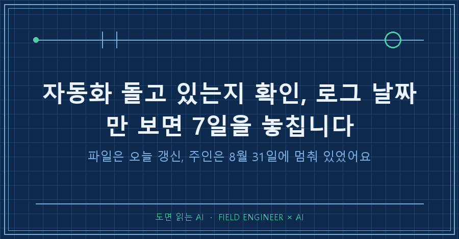
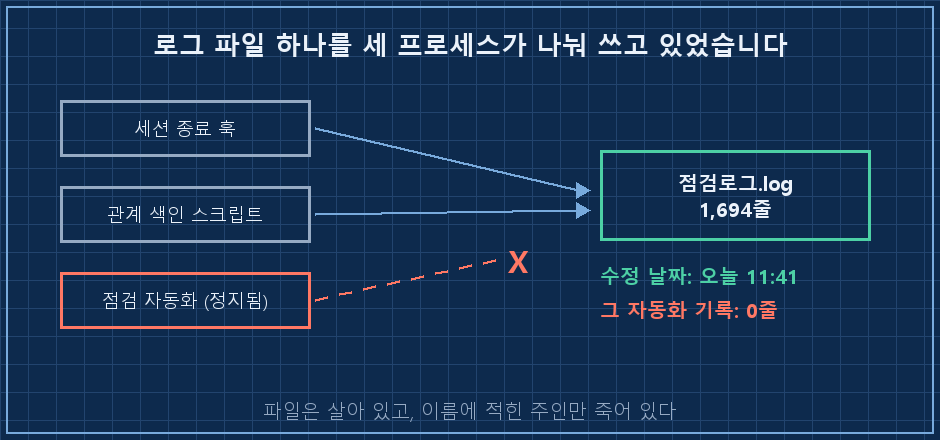
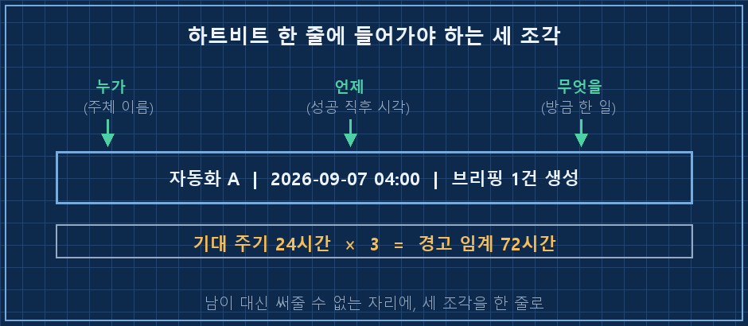
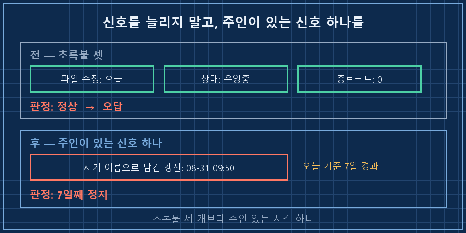

자동화가 돌고 있는지 확인하려고 아침에 점검 화면을 켰더니, 경고가 하나 떠 있었어요.
[WARNING] 가동성 — 자동 에이전트 정지 의심 1건
- QA : 마지막 갱신 2026-08-31 09:50 (3일+ 미갱신)
점수 95 / 100 (A) CRITICAL 0 WARNING 2 OK 36해당 로그 파일부터 열어봤습니다. 수정 날짜가 오늘 오전 11시 41분. 몇 시간 전이에요.
살아 있는데 왜 정지라고 하지. 오탐이네.. 그러고 창을 닫을 뻔했습니다.
먼저 답부터 적을게요.
자동화가 돌고 있는지 확인할 때 로그 파일의 수정 날짜는 증거가 되지 못합니다. 그 파일에 글을 쓰는 주체가 내가 확인하려는 자동화와 같은 놈인지부터 봐야 해요. 살아있음을 증명하는 건 주체가 남긴 시각 하나뿐입니다.
2026년 9월 기준이고, 윈도우 PC에서 작업 스케줄러로 파이썬 스크립트 여러 개를 굴리는 환경 얘기예요. 스케줄러든 크론이든 상관없습니다. 자동화 여러 개가 로그를 나눠 쓰는 구조라면 도구가 뭐든 똑같이 걸리는 함정이에요.
로그는 오늘 날짜인데 왜 정지라고 할까요
파일을 열어 눈으로 훑는 대신, 줄 수부터 셌습니다. 1,694줄. 그다음 어떤 종류의 기록이 몇 줄씩 들어 있는지 집계했어요.
# 로그에 어떤 이벤트가 몇 건씩 쌓였는지 세기 (재구성 예시)
awk -F'|' '{gsub(/^\[[^]]*\] /,"",$1); print $1}' 점검로그.log | sort | uniq -c | sort -rn
435 session_close.live_status
435 session_close.history
435 session_close.brain_log
348 session_close.handoff_report
39 session_close.kb_index
1 build_relations.dry_run
1 build_relations여기서 좀 멍했어요. 1,694줄 중 1,692줄이 세션 종료 훅이 남긴 기록입니다. 제가 확인하려던 그 점검 자동화가 직접 남긴 줄은 0줄이었어요. 2026년 5월 19일 첫 줄부터 오늘까지, 단 한 줄도요.
원인은 코드에 있었습니다. 파일 경로가 다른 스크립트에 상수로 박혀 있더라고요.
# session_close.py
QA_LOG = ".../qa_automation_test.log" # 이름은 점검 로그, 쓰는 놈은 세션 종료 훅처음에 점검용으로 하나 만들어 둔 파일이었는데, 나중에 만든 다른 스크립트가 "로그 파일 이미 있네" 하고 그 자리에 계속 써온 겁니다. 그래서 파일 수정 날짜는 매일 갱신됐어요. 정작 파일 이름에 적힌 그 자동화만 빼고 전부가요.
저는 제조 쪽에서 제어 일을 열다섯 해쯤 하고 있습니다. 판넬 앞에서 표시등 보고 설비 상태를 읽는 게 일상인데, 이 바닥에서 램프는 "전원이 들어왔다"는 뜻이지 "기계가 일하고 있다"는 뜻이 아니에요. 램프만 믿고 돌아섰다가 다시 불려 나온 사람이 한둘이 아닙니다. 파일 수정 날짜가 딱 그 램프였어요.

상태 칸에는 '운영중'이라고 적혀 있었어요
그럼 상태를 따로 기록해 두는 표를 보면 되겠네, 싶었죠. 제 시스템은 자동화별로 현재 상태를 작은 DB에 한 줄씩 들고 있거든요. 열어봤습니다.
# 상태 표 조회 결과 (역할 이름만 A·B로 바꿨습니다)
role status updated_at
----- ------- -------------------
A 운영중 2026-09-07 11:41
B 운영중 2026-09-06 20:19
QA 운영중 2026-08-31 09:50 ← 7일 전상태 칸은 운영중이었어요. 7일째 아무것도 안 했는데요.
당연한 얘기인데 당하기 전엔 잘 안 보입니다. 상태 문자열은 그 자동화가 마지막으로 끝났을 때의 결과예요. 잘 끝났으면 '운영중'이 찍히고, 그다음 실행이 영영 없어도 그 글자는 그대로 남습니다. 죽을 때 "나 죽는다"고 써주고 죽는 프로세스는 없어요. 멈춘 자동화는 아무 말도 안 하고, 그래서 마지막으로 남긴 말이 계속 화면에 붙어 있는 겁니다.
정답은 같은 줄의 오른쪽 끝에 있었어요. 갱신 시각. 저 값 하나만 오늘과 빼면 7일이 나옵니다.
그래서 무엇을 보고 판정해야 하나요
네 가지 신호를 놓고 각각 뭘 증명하는지 정리해봤습니다.
| 보는 것 | 실제로 증명하는 것 | 왜 속나 |
|---|---|---|
| 로그 파일 수정 날짜 | 누군가 이 파일에 썼다 | 쓴 주체가 다른 놈일 수 있다 |
| 상태 칸 문자열 | 마지막으로 끝났을 때의 결과 | 다음 실행이 없어도 안 바뀐다 |
| 스케줄러 종료 코드 0 | 프로세스가 정상 종료했다 | 아무 일도 안 하고 끝나도 0이다 |
| 주체가 남긴 갱신 시각 | 그 주체가 마지막으로 살아 있던 시점 | (이게 유일한 증거) |
앞의 세 개는 전부 "누군가 뭔가 했다"까지만 말해줍니다. 마지막 하나만 "이 자동화가 언제까지 살아 있었다"를 말해줘요. 여러분은 자동화 돌고 있는지 확인하실 때, 이 넷 중 어느 걸 보고 계신가요?
따라 하실 수 있게 4단계로
전제: 윈도우 10/11 + 파이썬 3, 작업 스케줄러로 스크립트를 굴리는 구조. 2026년 9월 기준입니다.
1. 로그 파일에 누가 쓰는지 코드에서 먼저 찾습니다. 파일 이름으로 프로젝트 전체를 검색하세요. 저는 여기서 스크립트 두 개가 같은 파일을 물고 있는 걸 발견했어요.
2. 로그를 눈으로 읽지 말고 종류별로 셉니다. 위의 집계 한 줄이면 충분해요. 확인하려는 자동화의 기록이 0건이면 그 파일은 증거가 아닙니다.
3. 자동화마다 자기 이름으로 시각을 남기게 합니다. 실행 성공 직후 이름 / 시각 / 방금 한 일 한 줄이면 돼요. 하트비트라고 부르는 그거고, 파일 한 줄이든 DB 한 행이든 형식은 상관없습니다. 중요한 건 다른 놈이 대신 못 써주는 자리여야 한다는 것.
4. 경고 임계값은 기대 주기의 2~3배로 박습니다. 매일 도는 자동화면 3일, 주 1회면 2~3주. 제 점검 규칙은 3일이었고, 그래서 이번에도 결국은 그 규칙이 잡아냈습니다!

확인 방법: 잘 도는 자동화 하나를 일부러 하루 멈춰보세요. 임계값이 지난 뒤 경고가 뜨면 성공입니다. 안 뜨면 그 감시는 지금 아무것도 안 보고 있는 거예요.

미리 답해두는 질문 셋
Q. 로그 파일을 자동화마다 따로 만들면 해결되지 않나요?
그게 제일 깔끔합니다. 다만 파일을 나눠도 "언제까지 살아 있었나"는 여전히 파일 수정 날짜로 보게 돼요. 백업 도구나 편집기가 파일을 건드리면 그 날짜는 또 움직입니다. 파일을 나누는 건 원인 하나를 없애는 거지, 판정 기준을 세우는 것과는 다른 일이에요.
Q. 스케줄러 기록에 '마지막 실행 시각'이 이미 있는데요?
그건 스케줄러가 띄웠다는 기록입니다. 스크립트가 첫 줄에서 죽어도 그 시각은 찍혀요. 저는 그래서 실행 시각이 아니라 성공 직후에 찍히는 시각을 따로 봅니다. 둘이 벌어져 있으면 뜨긴 뜨는데 일은 안 하고 있다는 뜻이라, 오히려 이 간격이 제일 쓸모 있는 신호예요.
Q. 감시 규칙을 또 만들면 그것도 언젠가 멈추지 않나요?
멈춥니다. 그래서 감시 규칙은 하나만 두고, 그 하나가 매일 점수와 경고 건수를 남기게 했어요. 오늘 아침에도 95점에 경고 2건이 찍혀 있었고요. 감시가 멈추면 그 숫자 자체가 안 올라오니까 그건 눈에 띕니다.
경고를 오탐이라고 판단할 뻔한 근거가 파일 수정 날짜 하나였다는 게 좀 뜨끔했어요. 3일 임계값을 넣어둔 과거의 제가 이번엔 저를 살렸습니다..
이런 오판과 정정 기록은 makefield.ai 쪽에 날짜별로 정리해 두고 있어요.
태그: #자동화돌고있는지확인 #자동화정지확인 #로그파일수정날짜 #자동화하트비트 #작업스케줄러확인 #자동화모니터링 #AI자동화구축 #AI에이전트관리 #AI결과물검수 #자동화로그 #파이썬자동화 #업무자동화 #AI에게일시키기 #개인AI에이전트 #도면읽는AI